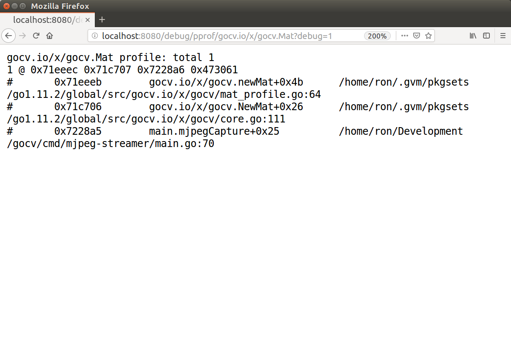

We’re proud to announce our latest release of GoCV (https://gocv.io) version 0.18.0. This is a big update, because we are now supporting the long awaited and just-released OpenCV version 4.0.
We also have some great new features from our amazing contributors. Thank you to everyone who has helped with the project getting ready for the release.
You can take a look at the full changelog at https://github.com/hybridgroup/gocv/blob/master/CHANGELOG.md#0180 for the details, or read on to learn more.
The hard-working OpenCV team has just shipped a huge update in version 4.0.0 and the new GoCV is intended to work only with this release and future releases in version 4.0. The future is here and now, dear friends.
All of our installation information is now updated for OpenCV 4, and we also have made some improvements for you. In particular, for macOS developers, we now have a Homebrew forumla that will not only install OpenCV 4, but also provided a more stripped down installation by doing so without all of the extra Python dependencies.

Thanks to new contributor @dougnd we now have custom pprof profiling for Mat creation.
Since memory allocations for images and any other Mat in GoCV are done through C based code, the Go garbage collector will not clean all resources associated with a Mat. As a result, any Mat created must be closed to avoid memory leaks.
In order to ease the detection and repair of this kind of resource leaks, the new MatProfile custom profiler has been added.
To include the MatProfile custom profiler, you MUST build or run your application or tests using the -tags matprofile build tag. For example:
go run -tags matprofile cmd/version/main.go
You can then get the profile’s count at any time using:
gocv.MatProfile.Count()
You can also display the current entries (the stack traces) with:
var b bytes.Buffer
gocv.MatProfile.WriteTo(&b, 1)
fmt.Print(b.String())
If you are using GoCV from an http server, then you can use the net/http/pprof package, and see the MatProfile information from your web browser. The “mjpeg-server” sample application has been modified to support this. Just run it using -tag matprofile like this to include the custom profiler:
go run -tags matprofile ./cmd/mjpeg-streamer/main.go 0 0.0.0.0:8080
Once it is running, just navigate to http://localhost:8080/debug/pprof/ and click on the “gocv.io/x/gocv.Mat” link under “Types of profiles available”. Very cool, thanks again to @dougnd.
Want to stay up to date with all our project activity? Follow us on Twitter at @GoCVio for the latest updates.